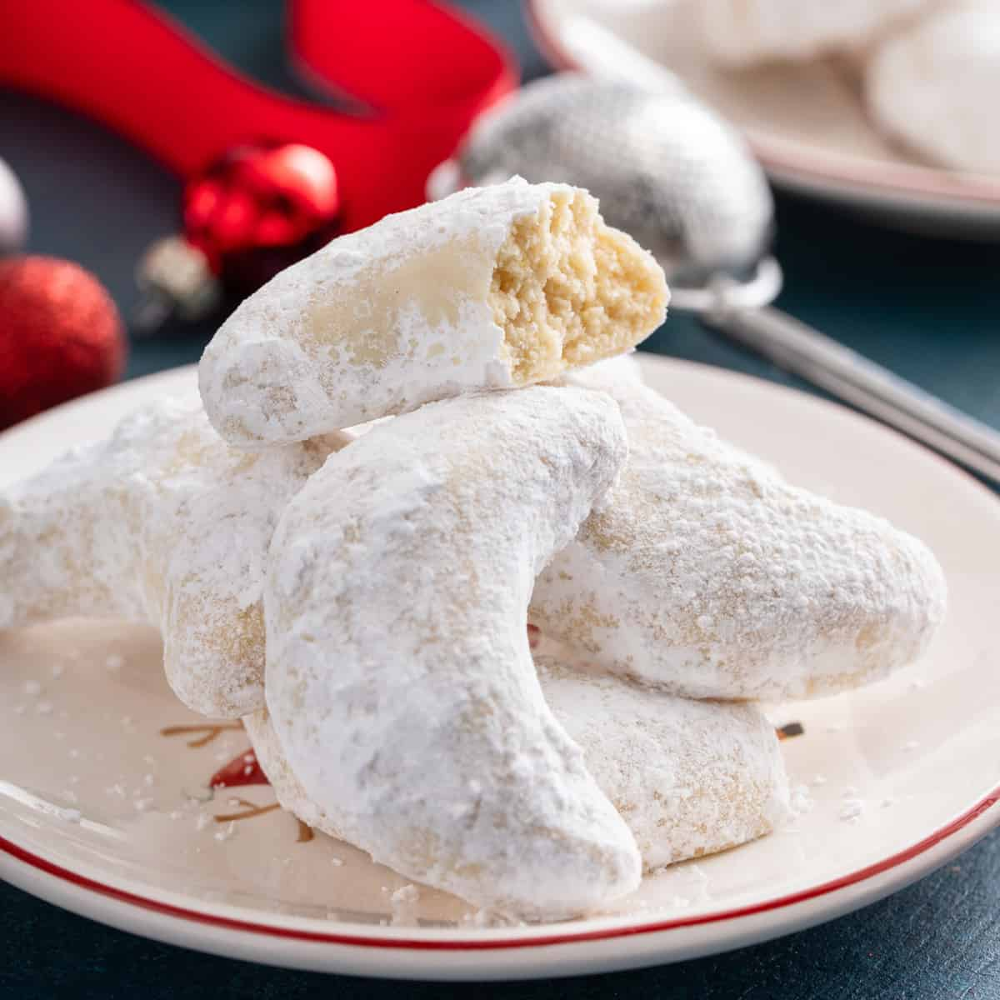

Hókifli
Hozzávalók
- 40 dekagramm liszt
- 30 dekagramm hideg vaj
- 1 darab tojássárgája
- 15 dekagramm darált dió
- 1 darab kezeletlen citrom héja
- 10 dekagramm kristálycukor
- 1 csipet só
- 10 dekagramm vaníliás porcukor

Elkészítés
- A hókifli tésztájához a lisztet a hideg vajjal és a tojássárgájával összemorzsoljuk, és hozzáadjuk a darált diót, a citrom lereszelt héját, a kristálycukrot, és a csipet sót, gyors mozdulatokkal össze dolgozzuk, az elkészült tésztát gombóccá formázzuk, folpackba csomagoljuk és berakjuk a hűtőbe legalább fél órára.
- A lehűlt tésztát kettévágjuk az egyik felét visszarakjuk a hűtőbe további felhasználásig.
- A sütőt előmelegítjük 175 fokra.
- A tészta másik feléből kisebb darabokra tépünk, a darabokból nagyjából egy-másfél centi vastagságú hengert gyúrunk. A hengert négy-öt centiméteres kis darabokra vágjuk, és a kis daraboból kifliket formázunk.
- Egy tepsit kibélelünk sütőpapírral, erre helyezzük a kis kifliket, berakjuk sülni 12-15 percre.
- Amíg sül az első adag kifli, a hűtőben lévő tésztát is ugyan így elkészítjük, majd azt is megsütjük.
- Az elkészült kifliket hagyjuk langyosra hűlni majd langyosan megforgatjuk a vaníliás porcukorban, és már falhatjuk is!